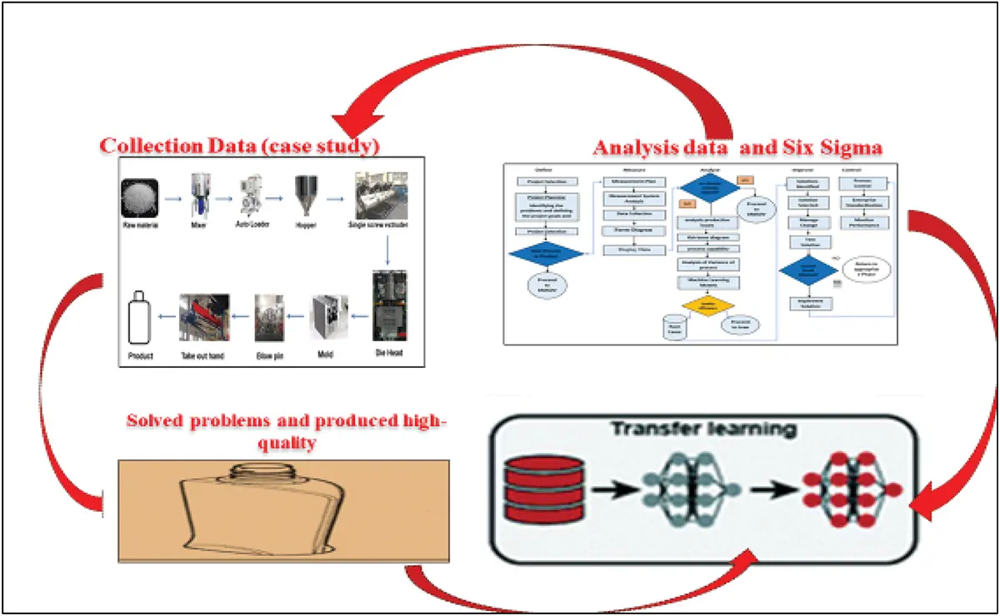

Case Studies on Plastic Manufacturing Processes
Explore real-world applications and success stories within the realm of production planning in plastic manufacturing through our curated case studies. Each case study showcases innovative strategies and their outcomes in optimizing efficiency, quality control, and sustainability in various industrial contexts. From implementing advanced technologies to streamlining production processes, these studies offer valuable insights into how effective planning can significantly impact operational excellence and industry standards. Whether you're a student, professional, or enthusiast, our case studies provide tangible examples that illustrate the practical benefits of strategic production planning within the dynamic landscape of plastic manufacturing.